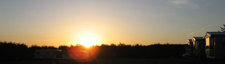

Mitt namn är Björn och för närvarande bor jag i Stockholm (Saltsjöbaden) där jag jobbar för Miljömärkning Sverige AB, som ansvarar för miljömärkningarna Svanen och EU Ecolabel i Sverige. Namnet Kilted Viking myntades av min kusin och refererar till mitt svensk-skotska arv samt det faktum att jag äger en kilt (Grant tartan). Jag föddes och växte upp i Båstad samt har spenderat de flesta av mina somrar med att besöka släkten i Skottland (huvudsakligen Pitlochry och Cupar).
1995 flyttade jag till Eskilstuna för studier och senare jobb. Där köpte jag ett hus 1998, som jag sålde 2006 för att flytta in i en husvagn (som bl.a. stod i Eskilstuna, Västerås och Bromma). Tidigare har jag även bott i Halmstad och Växjö för studier, föregående ort även för jobb.
Under ca. 11 års tid jobbade jag som systemadministratör, föreläsare och 'allt-i-allo' vid f.d. Ekonomihögskolan, Mälardalens högskola. Före det sålde jag multimediaprodukter (när CD-ROM var en nyhet). Under 4 säsonger jobbade jag på en campingplats, liksom under militärtjänst som väderbiträde (väderobservatör) i flyget.
Jobbrelaterade intressen är problemlösning och webbaserad systemutveckling. Jag älskar att lära mig nya saker - på senare tid har jag bl.a. studerat JavaScript och den flora av ramverk, bibliotek och verktyg som publicerats de senaste åren. En kollega introducerade nyligen mig till sökmotoroptimering (SEO) och strukturerad data för webbplatser.
För mer detaljer, se min CV (på engelska).
På senare tid har ett intresse för arkeologi och historia lagts till mina tidigare nördiga intressen för tåg och datorer. Området kring Mälaren är ett bra ställe att lära mer om vikingar och medeltiden. Mälardalen är också en vacker plats, speciellt på hösten med alla dess färger.
För tågintresserade så finns det en veteranjärnväg mellan Mariefred och Läggesta (öster om Eskilstuna). För en historisk resa till Mariefred kan man ta ångbåten från Stockholm.